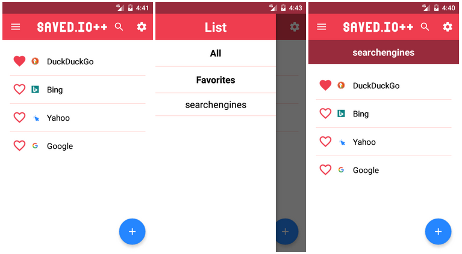

This application eases access to a web management service for bookmarks. This web service is very simple to use and provides several interesting features. I use this service for the management of my bookmarks and I am happy with it.
However, this service does not always provide a good user experience on mobile devices, depending on the browser that the user uses and how he uses it. Saved.io++ comes to solve these problems, offering a consistent user experience and adding a few more features that are useful on mobile devices. For example:
- Offline mode (bookmarks stored locally) and online mode (bookmarks are synchronized with Saved.io).
- Smart favorites. Most used bookmarks are marked automatically.
- Search engine.
- Widget of favorite bookmarks.
- Import/Export from/to a file.
Motivation
This is the first native android application that I have developed completely from scratch by myself, from the specifications until its publication in the store. I wanted to develop applications on my own in order to be ready for the exam and to continue gaining experience in this field. I was very interested in to develop a real application that uses a third-party service with open API, and even more if I can improve the user experience on mobiles even if only a little.
The development was a challenge in many aspects. I used a variety of third-party libraries that I did not know, I had listened a lot and was very keen to use, for example Realm and Retrofit.
Concept
The main objective was to ensure that all the functionality could be accessed from the application. On the one hand, it is very important that the application is tiny, pretty and easy to use, to justify its usefulness on mobile devices instead of using the original web site. On the other hand, I was interested in integrate with the android system with features such as a widget with favorite bookmarks, the option to add bookmark in the menu to share a link from any application, synchronize automatically and manually with the web service and notify changes using system notifications.
Implementation
The application has five activities (MainActivity, IntroActivity, SettingsActivity, NewBookmarkActivity and EditBookmarkActivity), three services (SyncIntentService, SyncFirebaseJobService and FavoritesWidgetRemoteViewsService) and one receiver (FavoritesWidgetProvider).
MainActivity provides access to all bookmarks, by using RecyclerView. It allows perform any operation over them using its buttons or gestures. It allows filtering by list using a side menu thanks to the use of NavigationView and DrawerLayout. It also allows the immediate synchronization of the bookmarks manually using SwipeRefreshLayout.
 MainActivity screenshotsIntroActivity displays start information the first time application is launched after installing it. It is interesting to communicate the user clearly and simply application modes (offline and online) and if user wants to link the application with his web service account.
SettingsActivity just shows SettingsFragment. It is a standard settings fragment because it extends PreferenceFragment. It has to be careful to perform actions on stored bookmarks if user changes values of the preferences that affects it like change user web service account API. This also contains export and import operations. To do this it uses standard system activities to select files by using implicit intentions with actions (OPEN_DOCUMENT and CREATE_DOCUMENT).
NewBookmarkActivity and EditBookmarkActivity share almost all the code and layouts because the functionality that they offer are close to be the same. The only differences between the two are the actions taken when creating the activity and pressing the ok button. NewBookmarkActivity has to check if the intent contains an URL (from share option) and saves it as new bookmark. EditBookmarkActivity has to retrieve information about the bookmark to edit and replace it instead create a new one.
SyncIntentService is very important as it performs the synchronization of web service bookmarks in a background thread. This downloads and updates the stored bookmarks (deleting, creating and editing bookmarks) and notifies the changes (if there are) with a notification.
SyncFirebaseJobService is periodically launched by FirebaseJobDispatcher and it has to check if it is necessary to synchronize the bookmarks with the web service. To do this simply check the last synchronization time and see if it is greater than the minimum allowed interval. If it is needed to synchronize bookmarks, it simply launch SyncIntentService.
FavoritesWidgetRemoteViewsService takes care of getting information about favorite bookmarks and providing views of each item in the Favorites widget list. All operations are done asynchronously because it extends RemoteViewsService and uses RemoteViewsFactory.
FavoritesWidgetProvider provides the metadata, creates and updates the favorites widget. It extends AppWidgetProvider and receives and process the broadcast events of the system APPWIDGET_UPDATE and also a custom one FAV_DATA_UPDATED.
Synchronization
I think it is interesting to highlight how the data from the web service servers is retrieved. This process is very simple thanks to the fact that it has a very simple and well documented public API. It is possible to check it on its dedicated website.
Basically, it is only necessary to 'translate' HTTP request and JSON response to java interfaces and POJO objects. This is thanks to libraries that do the rest of the work for me, in this case Retrofit and Gson respectively. All of this logic is defined in SavedioAPI (interface) and BookmarkAPI (class). For example, to get all the markers would be:
/**
* Returns the most recent bookmarks at a time.
* @param devKey Mandatory.
* @param userKey Mandatory.
* @param page Optional. Default is 1.
* @param limit Optional. Default is 50.
* @param list Optional.
* @return
*/
@GET("bookmarks/")
Call<List<BookmarkAPI>> retrieveAllBookmarks(@Query("devkey") String devKey,
@Query("key") String userKey,
@Query("page") Integer page,
@Query("limit") Integer limit,
@Query("list") String list);
Libraries
The 3rd party software that I have used for the application are:
- Realm: A mobile platform and a replacement for SQLite and Core Data. For example:
Bookmark bookmark = realm.where(Bookmark.class)
.equalTo(Bookmark.FIELD_ID, bookmarkId)
.findFirst();
bookmark.setFavorite(isFavorite);
Picasso.with(mContext)
.load(faviconPath)
.placeholder(noFavicon)
.into(holder.mBookmarkFavicon);
@BindView(R.id.toolbar) Toolbar mToolbar;
Gson gson = new GsonBuilder()
.setLenient()
.create();
Retrofit retrofit = new Retrofit.Builder()
.baseUrl(BASE_URL)
.addConverterFactory(GsonConverterFactory.create(gson))
.build();
mAPI = retrofit.create(SavedioAPI.class);
Driver driver = new GooglePlayDriver(context);
FirebaseJobDispatcher dispatcher = new FirebaseJobDispatcher(driver);
Job syncJob = dispatcher.newJobBuilder()
.setService(SyncFirebaseJobService.class)
.setTag(SYNC_TAG)
.setConstraints(Constraint.ON_ANY_NETWORK)
.setLifetime(Lifetime.FOREVER)
.setRecurring(true)
.setTrigger(Trigger.executionWindow(
(int) SYNC_INTERVAL_SECONDS,
(int) SYNC_INTERVAL_SECONDS + (int) SYNC_FLEXTIME_SECONDS))
.setReplaceCurrent(true)
.build();
dispatcher.schedule(syncJob);
Conclusion
Thanks to the development of this application I have been able to learn how to use some very interesting libraries. I also liked the work of developing it completely from scratch. The fact of publishing it in google play and having some users is very interesting from the educational point of view to learn the whole process of publishing, maintenance, support and update.
Finally, I'm happy because I've been able to contribute my bit to the bookmark management service that I like and that respects my privacy, is open and free.
I do not plan to add amazing features in the future, but feel free to contact me to suggest anything or report any bug.
The application is free software (GPLv3) and you can check the whole project in github.